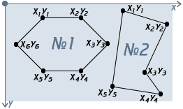
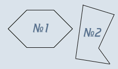

Главная | Оглавление | Словарь
Вот мы, наконец, добрались и до многоугольников.

Бу-бу-бу! :) Страшно?
На самом деле тут нет ничего страшного. Вы указываете точки (координаты углов), они как бы соединяются, и мы можем получить очень разнообразные фигуры (посмотрите на фигуру 2, правда здорово?). Используя poly, мы можем делать самые разнообразные области, от скромного треугольника до шикарной звезды.
Сейчас мы будем работать с фигурой №2, потому что у нее меньше углов (да, ленивая я, решила облегчить себе жизнь на один угол:).
Для начала зададим тип области:
<area shape="poly">
</map>
Координаты пишутся по следующему принципу:
<area shape="poly" coords="x1,y1,x2,y2,...,xN,yN">Расшифровывается это так: "координаты первого угла (x1,y1), координаты второго угла (x2,y2), еще много углов и их координат (...), координаты последнего угла (xN,yN)". Т.е. для нашего пятиугольника запись полностью будет выглядеть так:
<area shape="poly" coords="x1,y1,x2,y2,x3,y3,x4,y4,x5,y5">Теперь подставим реальные значения координат в наш код:
<area shape="poly" coords="168,9,232,29,200,97,223,129,153,119">
</map>
Дальше уже прописываем ссылку, имя карты, и привязываем карту к рисунку (это везде по одному и тому же принципу):
... Куча текста и всякого содержания, или ничего...
<map name="karta3">
<area href="drugoy_document_3.html" shape="poly" coords="168,9,232,29,200,97,223,129,153,119">
</map>
Теперь проверим, получилось ли у нас это безобразие (в этот раз вторая фигура, жмите):

Не забудьте прописать самостоятельно первую область (шестиугольник) - x1=54, y1=20, x2=109, y2=20, x3=147, y3=58, x4=109, y4=96, x5=54, y5=96, x6=16, y6=58.
Теперь я расскажу еще о нескольких нюансах и мы завершим наш разговор о картах:
1 - Мы можем одновременно использовать разные области, например круг и многоугольник:
... Куча текста и всякого содержания, или ничего...
<map name="karta3">
<area href="drugoy_document_3.html" shape="circle" coords="46,48,35,">
<area href="drugoy_document_3.html" shape="poly" coords="168,9,232,29,200,97,223,129,153,119">
</map>
2 - Наши области могут пересекаться (бывает, руки кривые). Это не смертельно, главное помнить, что в этом случае при нажатии на область пересечения приоритет имеет область, которая указана первой (т.е. пользователь пойдет на страницу, куда она ссылается).
3 - Вы можете не мучаться с картами, а найти на просторах интернета специальную программу, с помощью которой вы без труда сможете карту расчертить, и не прописывать все вручную - это может сэкономить ваше время, силы, нервы.
Надеюсь, с картами вам теперь все ясно, и вы можете продолжать обучение :)